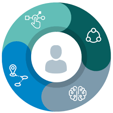

Qui sommes nous ?
INNOVSTREAM est un cabinet de conseil IT,
Data et Digital basé à Laayoune.
Depuis 2017, nous accompagnons nos clients au Maroc dans
l’atteinte de leurs objectifs et dans la facilitation de la mise en œuvre de leurs projets.
De la définition d’orientations stratégiques à la mise en œuvre de systèmes
d’information à forte valeur ajoutée en passant par le pilotage de projets.
Innovstream propose des prestations informatiques adaptées à
vos besoins en apportant du conseil en stratégie opérationnelle et organisationnelle,
de l’expertise IT et fonctionnelle et l’assistance à maîtrise d’ouvrage avec
notamment le pilotage de vos projets.
Data
Intelligence
Chez Inovalley Consulting & Technology, la Data est au centre de
notre vocation. Notre métier est de faire parler l’information
pour améliorer la performance de nos client et leur apporter les
solutions à leurs problématiques.
Conscients des problématiques de gestion des données
volumineuses, complexes, et consommatrices de temps en termes de
traitement manuel, Inovalley vous accompagne dans vos projets Data
de bout en bout, du cadrage du besoin jusqu’ à l’implémentation,
en s’appuyant sur l’expertise du cabinet et de nos consultants
dans toute la chaine de valeur Data.
Nous accompagnons nos clients au Maroc de nombreuses façons,
notamment en:
- Services de conseil en Business Intelligence -BI-
- Gestion etGestion et pilotage des projets Business Intelligence -BI- pilotage des projets Business Intelligence -BI-
- Développement (ETL/ELT & Restitution)
- Big Data
- Stratégies de mise en œuvre de l’entrepôt de données
Expérience
digitale
Grace a notre approche de développement stratégique, nous venons
en aide aux sociétés afin de créer de la transformation
positive.
Nous nous vous aidons à sécuriser et à accélérer vos projets de
transformation digitale et d’évolution de votre système
d’information, avec une approche sur mesure.
Projet et
Organisation
Une gestion efficace des projets et des programmes de la société
est la clé de la performance et du succès continu de votre
organisation. Inovalley fournit un portefeuille de services
- Mobiliser l’ensemble des acteurs clés autour d’une feuille de route motivante établie sur la base d’un diagnostic clair et partagé.
- Gérer les projets avec des procédures et les méthodologies adaptées, pour faire de chaque projet une réussite en délais, coûts et contenus.
- Accompagner les changements de comportement et de culture du management par la mise en place d’un système de conduite de changement efficace.
TECHNOLOGIES

CORE BANKING
Core Banking, Amplitude, SAB & TemenosBUSINESS INTELLIGENCE
Informatica, DataStage, Cognos V11, Business Objects, Microsoft SSRS, Qlikview, Lumira, Tableau
BIG DATA & ANALTICS
Hadoop (HDFS, HIVE, Hbase, PIG) , Cassandra, Spark (SparkSQL, MLLib, GraphX)
DIGITAL
JEE, AngularJS, Spring, ReactJS,PHP, .NET Architecture Micro-services, SOA, ESB / EAI
METHODOLOGIE AGILE
Scrum, Lean startupNous rejoindre
Veuillez remplir le formulaire suivant en joignant votre CV en PDF
Nous contacter
phone
Rue Soumaya Imm 82 4eme N°16 Quartier Palmier - Casablanca, Maroc
telegram
Rue Soumaya Imm 82 4eme N°16 Quartier Palmier - Casablanca, Maroc
mail
Rue Soumaya Imm 82 4eme N°16 Quartier Palmier - Casablanca, Maroc